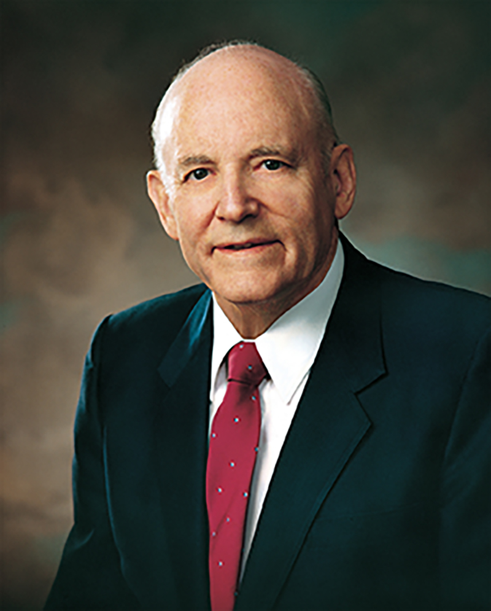

I would be my brother’s keeper; I would learn the healer’s art. To the wounded and the weary I would show a gentle heart. I would be my brother’s keeper–

A more excellent way
Howard W. Hunter
We need to walk more resolutely and more charitably the path that Jesus has shown. We need to pause to help and lift another
and surely we will find strength beyond [our] own.
If we would do more to learn the healer’s art,
there would be untold chances to use it, to touch the wounded and the weary
and show to all a gentle[r] heart.
Yes, Lord, we should follow thee.
Out of the abundance of his heart, Jesus showed his expressions and examples of unbounded charity:
- Jesus spoke to the:
- poor and downtrodden
- widows and little children
- farmers and fisherman
- goat and sheep tenders
- strangers and foreigners
- rich and politically powerful
- unfriendly Pharisees and scribes
-
Jesus blessed the:
-
Jesus also:
- drove out the demons and evil spirits
- purified those burdened with sin
- taught lessons of love
- repeatedly demonstrated unselfish service to others
The Savior has commanded us to love one another as he has loved us; to clothe ourselves with the bond of charity
(D&C 88:125), as he so clothed himself. We are called upon to purify our inner feelings, to change our hearts, to make our outward actions and appearance conform to what we say we believe and feel inside. We are to be true disciples of Christ.
I add my witness that Jesus is the Christ, the Savior of the world, and that this is his church, in the name of Jesus Christ, amen.
Read the full article on churchofjesuschrist.org
Bind Up Their Wounds
Henry B. Eyring
All of us are blessed with responsibility for others. To hold the priesthood of God is to be held responsible by God for the eternal lives of His children. That is real, that is wonderful, and at times that can feel overwhelming.
You and the priesthood bearers you are called to lead can have at least three assurances.
- First, the Lord will give you, if you ask, the feelings of compassion He feels for those in need.
- Second, He will provide others, like the innkeeper, to join with you in your service.
- And third, the Lord, like the good Samaritan, will more than recompense all who join in giving help to those in need.
You cannot know all your quorum members perfectly well, but God does. So, as you have done so many times, you prayed to know whom to ask to help serve others. The Lord knows who will be blessed by being asked to help and whose family will be blessed by not being asked. That is the revelation you can expect to come to you as you lead in the priesthood.
Wherefore, my beloved brethren, pray unto the Father with all the energy of heart, that ye may be filled with this love, which he hath bestowed upon all who are true followers of his Son, Jesus Christ; that ye may become the sons of God; that when he shall appear we shall be like him, for we shall see him as he is; that we may have this hope; that we may be purified even as he is pure.
I pray that we may prepare ourselves to give whatever priesthood service the Lord may set before us on our mortal journey. In the sacred name of Jesus Christ, amen.
Read the full article on churchofjesuschrist.org
First Observe, Then Serve
,
Linda Burton
One of the greatest evidences we have that our beloved prophet, President Thomas S. Monson, is the Lord’s chosen servant is that he has learned to follow the Savior’s example—serving individually, one by one. Those of us who have entered the waters of baptism have covenanted to do the same. We have covenanted to always remember [the Savior] and keep his commandments,
and He has said,This is my commandment, That ye love one another, as I have loved you.
We are all invited to follow Jesus’s teachings and to minister to others. This invitation is not limited to angelic sisters.
President Monson has reminded us that charity, the pure love of Christ
—or in other words, observing and serving— is evident when an elderly widow is remembered and taken to ward functions
and when the sister sitting alone in Relief Society receives the invitation, ‘Come—sit by us.’
The golden rule is applicable here: Whatsoever ye would that men [or women] should do to you, do ye even so to them.
May we all seek to firstobserve, then serve. As we do so, we are keeping covenants, and our service, like President Monson’s, will be evidence of our discipleship. I know the Savior lives. His Atonement enables us to live His teachings. I know President Monson is our prophet today. In the name of Jesus Christ, amen.
Read the full article on churchofjesuschrist.org
Sisterhood: Oh, How We Need Each Other
Bonnie L. Oscarson
To be sisters implies that there is an unbreakable bond between us. Sisters take care of each other, watch out for each other, comfort each other, and are there for each other through thick and thin. The Lord has said, I say unto you, be one; and if ye are not one ye are not mine.
The adversary would have us be critical or judgmental of one another. He wants us to concentrate on our differences and compare ourselves to one another. You may love to exercise vigorously for an hour each day because it makes you feel so good, while I consider it to be a major athletic event if I walk up one flight of stairs instead of taking the elevator. We can still be friends, can’t we?
Sister Marjorie P. Hinckley once said, Oh, how we need each other. Those of us who are old need you who are young. And, hopefully, you who are young need some of us who are old. It is a sociological fact that women need women. We need deep and satisfying and loyal friendships with each other.
Sister Hinckley was right; oh, how we need each other!
I extend to you an invitation that was issued once before by a Relief Society general president who said,I invite you to not only love each other more but love each other better.
May we realize just how much we need each other, and may we all love one another better, is my prayer in the name of Jesus Christ, amen.
Read the full article on churchofjesuschrist.org